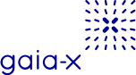
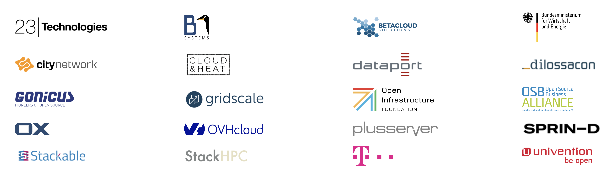

Gaia-X & Sovereign Cloud Stack

As a day one member of the Gaia-X European Association for Data and Cloud AISBL
we actively help to improve data sovereignty in Europe.
Our solution OSISM is an integral part of the Sovereign Cloud Stack (SCS) project
funded by the Federal Agency For Disruptive Innovation (SPRIND).
Sovereign Cloud Stack (SCS) is cloud technology built entirely with Open Source Software –
as an alternative to propietary cloud technology. Only Open Source guarantees interoperability,
transparency and independence from legal claims of third parties and thus from political interference.
By using the modular SCS software stack, cloud providers can offer Infrastructure-as-a-Service and
Container-as-a-Service without depending on other vendors.
SCS is using and standardizing existing and proven Open Source components such as e.g. Kubernetes
and does extend them where required. Federated cloud services are enabled this way, and users can
leverage distributed cloud services from several SCS operators. European companies thus have
options all the way from running it themselves or using one or several service providers and thus
have 100% freedom of choice avoiding lock-in effects and dependencies from providers from foreign
jurisdictions.
By sharing and documenting best practices for operating such cloud stacks, the difficulty to
provide high quality cloud services internally or publicly is vastly reduced.
The target of SCS and the supporting companies: Anyone can benefit from the SCS software stack by using it – and by
contributing to the open source code, one will increase the value of Gaia-X.

Source: SCS project website
For German-speaking readers, iX 2020/12
contains an article with the title Wolken-Verbund
written by Kurt Garloff. This article presents in detail the vision behind the Sovereign Cloud Stack and
the current state of technical implementation based on OSISM.
In the document Digitale Souveränität – Status quo und Handlungsfelder
published on 03/25/2021 by the Deutsche Akademie der Technikwissenschaften, the Sovereign Cloud Stack
is listed as a key building block in Gaia-X.
Contact us for more information about Sovereign Cloud Stack and Gaia-X.